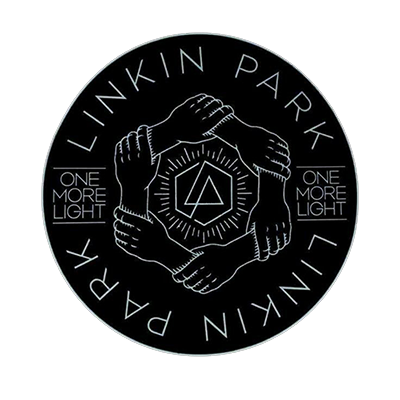
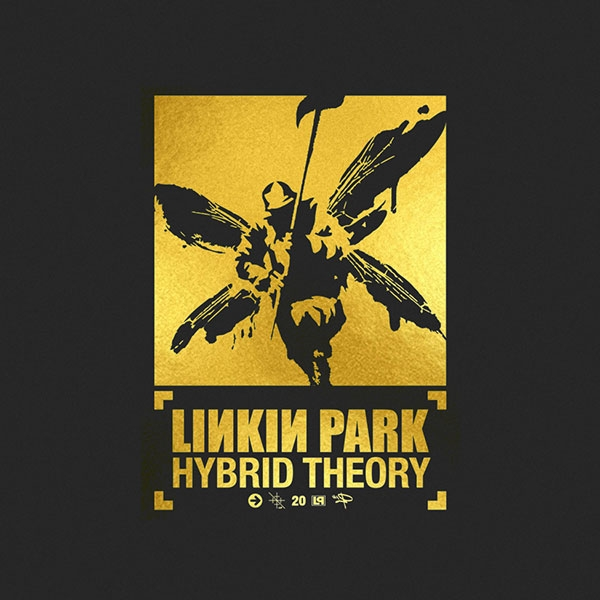
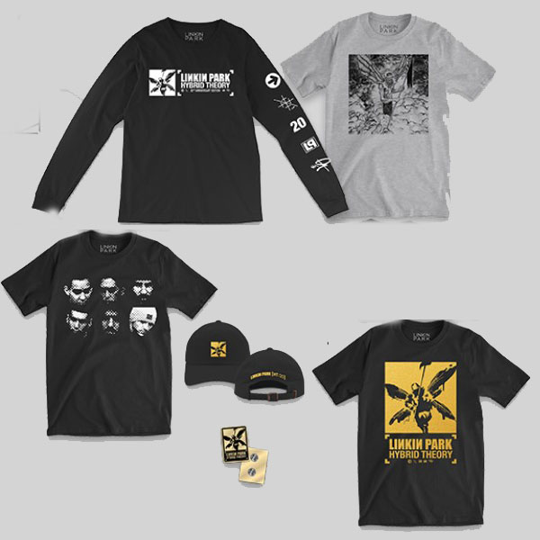

Sobre Ellos
Linkin Park es una banda de rock alternativo procedente de Los Angeles, California, Estados Unidos. Formada en 1996, la banda inició en ese mismo año sus primeros trabajos musicales de manera independiente y posterior a esto grabaron su primer material llamado Xero; sin embargo no tuvieron gran éxito en la búsqueda de un sello discográfico ya que ninguno mostró interés en su trabajo, lo que ocasionó la renuncia de Mark Wakefield. Poco después, Chester Bennington se incorporó a la banda como vocalista; el grupo realizó su primera presentación en un club de Los Ángeles y siendo respaldados por Jeff Blue, en aquel entonces vicepresidente de Warner Bros. Records, lograron firmar con el sello en 1999. El nombre del grupo es un juego de palabras haciendo referencia al Lincoln Park en Santa Mónica.

Super deluxe box Hybrid Theory 20th
"Hybrid Theory" cumple 20 años y la nueva edición aniversario de este gran álbum contiene maquetas inéditas, rarezas, caras B, DVDs, imágenes inéditas y otros extras.
Buy Now

Merchandising Hybrid Theory 20th
Exclusive Hybrid Theory20th Anniversary EDITION Merch Collection dónde encontrarás remeras, pantalones, buzos, gorros, tazas y mucho accesorios más.
Store